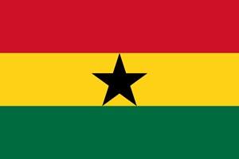

Lord Anthony Senanu
About Me

Hello! I'm Lord Anthony Senanu, a versatile professional based in Ghana, offering a range of services as a Virtual Assistant, Graphic/Brand Designer, Web Designer, Digital Marketer, IT Support Specialist, and Consultant. My expertise spans: - Digital and print design - Logo and brand development - Concept design - Digital marketing and advertisement - IT support services - IT consultancy I provide comprehensive design solutions to businesses of all sizes, delivering high-quality brand identity services, including design, guidelines, and branding consultation. Let's collaborate to elevate your brand!".
Ghana, My country
Ghana, country of western Africa, situated on the coast of the Gulf of Guinea. Although relatively small in area and population, Ghana is one of the leading countries of Africa, partly because of its considerable natural wealth and partly because it was the first black African country south of the Sahara to achieve independence from colonial rule.